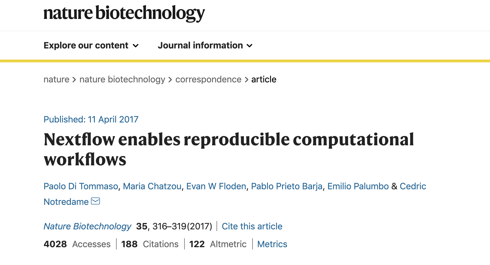
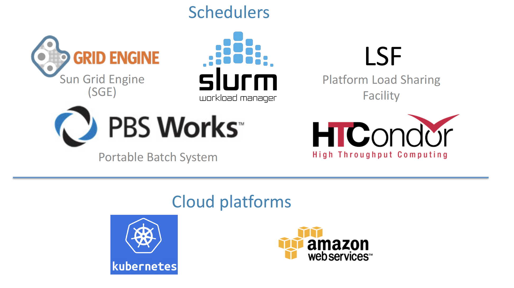
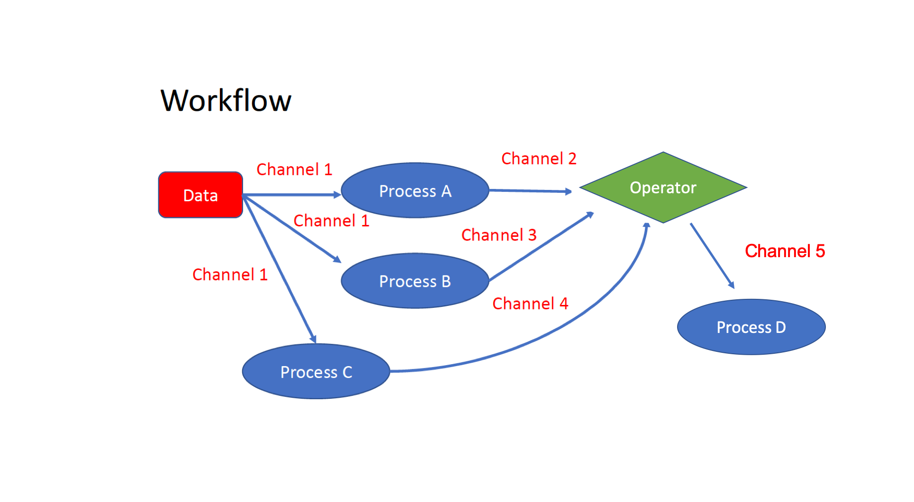

Nextflow 1
Introduction to Nextflow
DSL for data-driven computational pipelines. www.nextflow.io.
What is Nextflow?

Nextflow is a domain specific language (DSL) for workflow orchestration that stems from Groovy. It enables scalable and reproducible workflows using software containers. It was developed at the CRG in the Lab of Cedric Notredame by Paolo Di Tommaso. The Nextflow documentation is available here and you can ask help to the community using their gitter channel or joining their slack channel.
In 2020, Nextflow has been upgraded from DSL1 version to DSL2. In this course we will use exclusively DSL2. It is currently developed and mantained by the company Seqera Labs
What is Nextflow for?
It is for making pipelines without caring about parallelization, dependencies, intermediate file names, data structures, handling exceptions, resuming executions, etc.
It was published in Nature Biotechnology in 2017.
{kind=link}
Searching Nextflow in Google scholar gives you currently 8,940 results.
A curated list of Nextflow pipelines.
Many pipelines written collaboratively are provided by the NF-core project.
Some pipelines written in Nextflow have been used for the SARS-Cov-2 analysis too, for example:
The artic Network pipeline ncov2019-artic-nf.
The CRG / EGA viral Beacon pipeline Master of Pores.
The nf-core pipeline viralrecon.
Main advantages
Fast prototyping
You can quickly write a small pipeline that can be expanded incrementally. Each task is independent and can be easily added to other. You can reuse scripts without re-writing or adapting them.
Reproducibility
Nextflow supports Docker and Singularity containers technology. Their use will make the pipelines reproducible in any Unix environment. Nextflow is integrated with GitHub code sharing platform, so you can call directly a specific version of a pipeline from a repository, download and use it on-the-fly.
Portability
Nextflow can be executed on multiple platforms without modifiying the code. It supports several schedulers such as SGE, LSF, SLURM, PBS, HTCondor and cloud platforms like Kubernetes, Amazon AWS, Google Cloud.
{kind=link}
Scalability
Nextflow is based on the dataflow programming model which simplifies writing complex pipelines. The tool takes care of parallelizing the processes without additionally written code. The resulting applications are inherently parallel and can scale-up or scale-out transparently; there is no need to adapt them to a specific platform architecture.
Resumable, thanks to continuous checkpoints
All the intermediate results produced during the pipeline execution are automatically tracked. For each process a temporary folder is created and is cached (or not) once resuming an execution.
Workflow structure
The workflows can be represented as graphs where the nodes are the processes and the edges are the channels. The processes are blocks of code that can be executed - such as scripts or programs - while the channels are asynchronous queues able to connect processes among them via input / output.
{kind=link}
Processes are independent from each another and can be run in parallel, depending on the number of elements in a channel. In the previous example, processes A, B and C can be run in parallel and only when they ALL end the process D is triggered. As you can see an operator is used for collecting or reshaping the output channels for generating a new one that is then consumed by the process D.
Installation
Note
Nextflow is already installed on the machines provided for this course. You need at least the Java version 8 for the Nextflow installation.
Tip
You can check the version fo java by typing:
java -version
Then we can install Nextflow with:
curl -s https://get.nextflow.io | bash
This will create the nextflow executable that can be moved, for example, to /usr/local/bin.
We can test that the installation was successful with:
nextflow run hello
N E X T F L O W ~ version 20.07.1
Pulling nextflow-io/hello ...
downloaded from https://github.com/nextflow-io/hello.git
Launching `nextflow-io/hello` [peaceful_brahmagupta] - revision: 96eb04d6a4 [master]
executor > local (4)
[d7/d053b5] process > sayHello (4) [100%] 4 of 4 ✔
Ciao world!
Bonjour world!
Hello world!
Hola world!
This command downloads and runs the pipeline hello from the Nextflow official GitHub repository.
Nextflow main concepts
Channels and Operators
There are two different types of channels:
A queue channel is a non-blocking unidirectional FIFO (First In, First Out) queue which connects two processes or operators.
A value channel, a.k.a. singleton channel, is bound to a single value and can be read unlimited times without consuming its content.
An operator is a method that reshapes or connects different channels applying specific rules.
We can write a very simple Nextflow script: save the following piece of code in a file called ex1.nf. All the examples are in the folder
/nextflow/examples/ while the scripts are in folders named /nextflow/test
#!/usr/bin/env nextflow
// This is a comment
/*
* This is a block of comments
*/
// This is needed for activating the new DLS2
nextflow.enable.dsl=2
/*
* This is a channel creating
* from string values
*/
str = Channel.from('hello', 'hola', 'bonjour')
/*
* The operator view() can be used to view the channel `str`
* https://www.nextflow.io/docs/latest/operator.html#view
*/
str.view()
Once the file is saved, execute it with:
nextflow run ex1.nf
N E X T F L O W ~ version 20.07.1
Launching `ex1.nf` [agitated_avogadro] - revision: 61a595c5bf
hello
hola
bonjour
As you can see, the Channel is just a collection of values, but it can also be a collection of file paths.
Let’s create three empty files with the touch command:
touch aa.txt bb.txt cc.txt
and make another script (ex2.nf) with the following code:
#!/usr/bin/env nextflow
// enable DSL2
nextflow.enable.dsl=2
/*
* Let's create the channel `my_files`
* using the method fromPath
*/
Channel
.fromPath( "*.txt" )
.set {my_files}
// We can use the view() operator again to see the content of channel "my_files"
my_files.view()
We can now execute ex2.nf:
nextflow run ex2.nf
N E X T F L O W ~ version 20.07.1
Launching `ex2.nf` [condescending_hugle] - revision: f513c0fac3
/home/ec2-user/git/CRG_Nextflow_Jun_2022/nextflow/aa.txt
/home/ec2-user/git/CRG_Nextflow_Jun_2022/nextflow/bb.txt
/home/ec2-user/git/CRG_Nextflow_Jun_2022/nextflow/cc.txt
Once executed, we can see that a folder named work is generated. Nextflow stores in this folder the intermediate files generated by the processes.
In genomics we often have couple of files that have to be processed at the same times, such as the paired end reads etc. For this Nextflow allow using a special method for generating “tuples” from file pairs.
We can simulate this situation by generating a couple of files:
touch aaa_1.txt aaa_2.txt
Then we use fromFilePairs for generating a tuple (script ex3.nf):
#!/usr/bin/env nextflow
nextflow.enable.dsl=2
/*
* Let's create the channel `my_files`
* using the method fromFilePairs
*/
Channel
.fromFilePairs( "aaa_{1,2}.txt" )
.set {my_files}
my_files.view()
Executing it will show the emission of a tuple which key is the common part of the two input files:
nextflow run ex3.nf
N E X T F L O W ~ version 21.10.6
Launching `ex3.nf` [reverent_ampere] - revision: 87d78a151f
[aaa, [/nfs/users/bi/lcozzuto/aaa/CRG_Nextflow_Jun_2022/nextflow/examples/aaa_1.txt, /nfs/users/bi/lcozzuto/aaa/CRG_Nextflow_Jun_2022/nextflow/examples/aaa_2.txt]]
We can reshape the channels in several ways and / or cross them using operators so that they can be used for a particular purpose. In brief, each “emission” of a channel can be used by a process for a specific purpose.
Exercise
Using again the previous 3 .txt files (“aa.txt”, “bb.txt”, “cc.txt”), reshape the channels to emit:
A single channel with a single emission with all the files
A channel with each possible file combination ( A vs A, A vs B, A vs C etc..)
A tuple with a custom id, i.e. something like [“custom id”, [“aa.txt”, “bb.txt”, “cc.txt”]]
See here the list of Operators available at the official documentation.
Solution
#!/usr/bin/env nextflow
nextflow.enable.dsl=2
Channel
.fromPath("{aa,bb,cc}.txt")
.set {my_files}
my_files
.collect()
.view()
// You can also write it as: my_files.collect().view()
my_files
.combine(my_files)
.view()
my_files
.collect()
.map{
["custom id", it]
}.view()
Processes
Let’s add a process to the previous script ex1.nf and let’s call it ex1_a.nf
#!/usr/bin/env nextflow
nextflow.enable.dsl=2
str = Channel.from('hello', 'hola', 'bonjour')
/*
* Creates a process which receives an input channel containing values
* Each value emitted by the channel triggers the execution
* of the process. The process stdout is captured and sent over
* the another channel.
*/
process printHello {
input:
val str_in
output:
stdout
script:
"""
echo ${str_in} in Italian is ciao
"""
}
The process can be seen as a function that is composed of:
An input part where the input channels are defined.
An output part where we specify what to store as a result, that will be sent to other processes or published as final result.
A script part where we have the block of code to be executed using data from the input channel, and that will produce the output for the ouput channel.
Any kind of code / command line can be run there, as it is language agnostic.
Note
You can have some trouble with escaping some characters: in that case, it is better to save the code into a file and call that file as a program.
Tip
Before the input, you can indicate a tag that will be reported in the log. This is quite useful for logging / debugging.
Workflow
The code above will produce nothing (actually a warning), because it requires the part that will actually call the process and connect it to the input channel.
nextflow run ex1_a.nf -dsl2
N E X T F L O W ~ version 22.04.3
Launching `ex1_a.nf` [irreverent_leakey] DSL2 - revision: 224d75e0c7
=============================================================================
= WARNING =
= You are running this script using DSL2 syntax, however it does not =
= contain any 'workflow' definition so there's nothing for Nextflow to run. =
= =
= If this script was written using Nextflow DSL1 syntax, please add the =
= setting 'nextflow.enable.dsl=1' to the nextflow.config file or use the =
= command-line option '-dsl1' when running the pipeline. =
= =
= More details at this link: https://www.nextflow.io/docs/latest/dsl2.html =
=============================================================================
This part is called a workflow.
Let’s add a workflow to our code ex1_a.nf. Now we will have our first prototype of a Nextflow pipeline, so we can rename it test0.nf. You can find this code in /nextflow/test0/ folder:
#!/usr/bin/env nextflow
/*
* This code enables the new dsl of Nextflow.
*/
nextflow.enable.dsl=2
/*
* Creates a channel emitting some string values
*/
str = Channel.from('hello', 'hola', 'bonjour')
/*
* Creates a process which receive an input channel containing values
* Each value emitted by the channel triggers the execution
* of the process. The process stdout is caputured and send over
* the another channel.
*/
process printHello {
tag { "${str_in}" }
input:
val str_in
output:
stdout
script:
"""
echo ${str_in} in Italian is ciao
"""
}
/*
* A workflow consist of a number of invocations of processes
* where they are fed with the expected input channels
* as they were cutom functions. You can only invoke once a process per workflow.
*/
workflow {
result = printHello(str)
result.view()
}
We can run the script sending the execution in the background (with the -bg option) and saving the log in the file log.txt.
nextflow run test0.nf -bg > log.txt
Nextflow log
Let’s inspect the log file:
cat log.txt
N E X T F L O W ~ version 20.07.1
Launching `test0.nf` [high_fermat] - revision: b129d66e57
[6a/2dfcaf] Submitted process > printHello (hola)
[24/a286da] Submitted process > printHello (hello)
[04/e733db] Submitted process > printHello (bonjour)
hola in Italian is ciao
hello in Italian is ciao
bonjour in Italian is ciao
The tag allows us to see that the process printHello was launched three times using the hola, hello and bonjour values contained in the input channel.
At the start of each row, there is an alphanumeric code:
**[6a/2dfcaf]** Submitted process > printHello (hola)
This code indicates the path in which the process is “isolated” and where the corresponding temporary files are kept in the work directory.
Note
IMPORTANT: Nextflow will randomly generate temporary folders so they will be named differently in your execution!!!
Let’s have a look inside that folder:
# Show the folder's full name
echo work/6a/2dfcaf*
work/6a/2dfcafc01350f475c60b2696047a87
# List was is inside the folder
ls -alht work/6a/2dfcaf*
total 40
-rw-r--r-- 1 lcozzuto staff 1B Oct 7 13:39 .exitcode
drwxr-xr-x 9 lcozzuto staff 288B Oct 7 13:39 .
-rw-r--r-- 1 lcozzuto staff 24B Oct 7 13:39 .command.log
-rw-r--r-- 1 lcozzuto staff 24B Oct 7 13:39 .command.out
-rw-r--r-- 1 lcozzuto staff 0B Oct 7 13:39 .command.err
-rw-r--r-- 1 lcozzuto staff 0B Oct 7 13:39 .command.begin
-rw-r--r-- 1 lcozzuto staff 45B Oct 7 13:39 .command.sh
-rw-r--r-- 1 lcozzuto staff 2.5K Oct 7 13:39 .command.run
drwxr-xr-x 3 lcozzuto staff 96B Oct 7 13:39 ..
You see a lot of “hidden” files:
.exitcode, contains 0 if everything is ok, another value if there was a problem.
.command.log, contains the log of the command execution. It is often identical to .command.out
.command.out, contains the standard output of the command execution
.command.err, contains the standard error of the command execution
.command.begin, contains what has to be executed before .command.sh
.command.sh, contains the block of code indicated in the process
.command.run, contains the code made by nextflow for the execution of .command.sh, and contains environmental variables, eventual invocations of linux containers etc.
For example, the content of .command.sh is:
cat work/6a/2dfcaf*/.command.sh
#!/bin/bash -ue
echo hola in Italian is ciao
And the content of .command.out is
cat work/6a/2dfcaf*/.command.out
hola in Italian is ciao
You can also name the sub workflows to combine them in the main workflow. For example, using this code you can execute two different workflows that contain the same process. As you can see the named workflows work similarly to the process: the input is defined by the take keyword, while the script part is represented by the main. We also have an equivalent of output that is emit that will be described later on. The following script can be found in test0_b.nf file
#!/usr/bin/env nextflow
nextflow.enable.dsl=2
str = Channel.from('hello', 'hola', 'bonjour')
process printHello {
tag "${str_in}"
input:
val str_in
output:
stdout
script:
"""
echo ${str_in} in Italian is ciao
"""
}
/*
* A workflow can be named as a function and receive an input using the take keyword while the processing part is described by the main keyword
*/
workflow first_pipeline {
take: str_input
main:
printHello(str_input).view()
}
/*
* You can re-use the previous processes and combine as you prefer
*/
workflow second_pipeline {
take: str_input
main:
printHello(str_input.collect()).view()
}
/*
* You can then invoke the different named workflows in this way
* passing the same input channel `str` to both
*/
workflow {
first_pipeline(str)
second_pipeline(str)
}
We can add the collect operator to the second workflow that would collect the output from different executions and return the resulting list as a sole emission.
Let’s run the code:
nextflow run test0_b.nf -bg > log2
cat log2
N E X T F L O W ~ version 20.07.1
Launching `test0_b.nf` [irreverent_davinci] - revision: 25a5511d1d
[de/105b97] Submitted process > first_pipeline:printHello (hello)
[ba/051c23] Submitted process > first_pipeline:printHello (bonjour)
[1f/9b41b2] Submitted process > second_pipeline:printHello (hello)
[8d/270d93] Submitted process > first_pipeline:printHello (hola)
[18/7b84c3] Submitted process > second_pipeline:printHello (hola)
hello in Italian is ciao
bonjour in Italian is ciao
[0f/f78baf] Submitted process > second_pipeline:printHello (bonjour)
hola in Italian is ciao
['hello in Italian is ciao\n', 'hola in Italian is ciao\n', 'bonjour in Italian is ciao\n']
We can change the pipeline to produce files instead of standard output. The script is named test0_c.nf.
#!/usr/bin/env nextflow
nextflow.enable.dsl=2
str = Channel.from('hello', 'hola', 'bonjour')
process printHello {
tag "${str_in}"
input:
val str_in
output:
path("${str_in}.txt")
script:
"""
echo ${str_in} in Italian is ciao > ${str_in}.txt
"""
}
process printHello2 {
tag "${str_in}"
input:
val str_in
output:
path("cheers.txt")
script:
"""
echo ${str_in.join(', ')} in Italian are ciao > cheers.txt
"""
}
/*
* A workflow can be named as a function and receive an input using the take keyword
*/
workflow first_pipeline {
take: str_input
main:
printHello(str_input)
}
/*
* You can re-use the previous processes an combine as you prefer
*/
workflow second_pipeline {
take: str_input
main:
printHello2(str_input.collect())
}
/*
* You can then invoke the different named workflows in this way
* passing the same input channel `str` to both
*/
workflow {
first_pipeline(str)
second_pipeline(str)
}